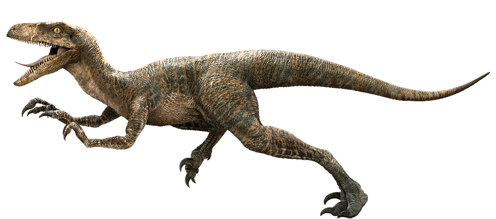
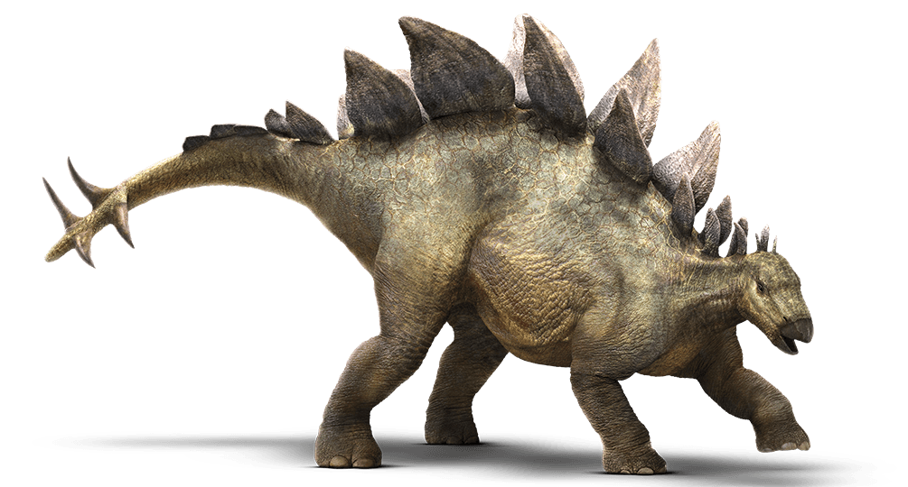
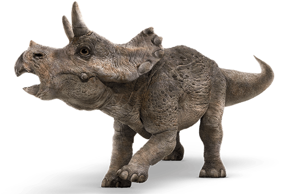
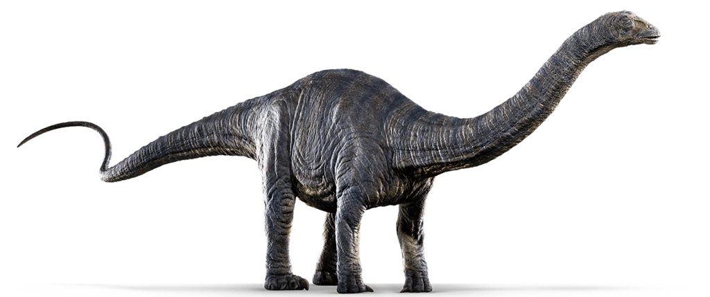

Name: Christina
Aggression Index: High
Diet: Carnivore
Velociraptor (meaning “swift seizer”) are one of the most famous carnivores. Despite their small stature (average of 7ft long, 2ft high, 33lbs) and feathered body, they are extremely dangerous. They have four digits on each of their hind “feet;” the third and fourth on the ground for walking, the first a dewclaw, and the second--for which they are best known--held retracted off the ground. This second digit contained a sickle-shaped claw, used to attack prey.
Meet ten-year-old Christina on your next visit!
Velociraptor

Stegosaurus

Name: Rebecca
Aggression Index: Low
Diet: Herbivore
Stegosaurus (meaning “roof lizard” or “covered lizard”) are one of the most recognizable dinosaurs due to their kite-shaped, protruding plates (used for thermoregulation and display) and tails tipped with spikes, which they swing like maces. Their fossils were originally discovered in the western United States and Portugal. Stegosaurus can grow up to 30ft in length and 8ft high.
Rebecca is one of our oldest dinosaurs at 28 years. Her favorite food is cactus (spines removed).
Name: Olivia
Aggression Index: Low
Diet: Herbivore
Triceratops (meaning “three-horned face”) are one of the most recognizable dinosaurs at Jurassic Park because of the famous boned facial structure, similar to a modern-day rhinoceros. This strong structure was undoubtedly used for defense purposes, but also acts as a dominance display and courtship mechanism similarly to antlers on deer. The average length is 27ft long, 10ft high, and weighing around 20,000lbs.
Olivia is one of the newest additions to the Jurassic Park family. She was born last summer and is making her park debut on June 1, 2016.
Triceratops

Apatosaurus

Name: Julio
Aggression Index: Low
Diet: Herbivore
Apatosaurus (meaning “deceptive lizard”) once roamed North America, with fossil reports found in modern-day Colorado, Oklahoma, and Utah in the US. Today they grow to an average 75ft, and weigh an average of 16.4 metric tons. Unlike other long-necked dinosaurs, they have thicker bones in the neck and legs because of their more robust nature. Most apatosaurus eat a heavy diet of plants, berries, and fruits. Like other diplodocids, they use their tail as a whip to create sudden, loud sounds to ward off predators.
Julio is our friendliest apatosaurus. This year he turned 20 years old!